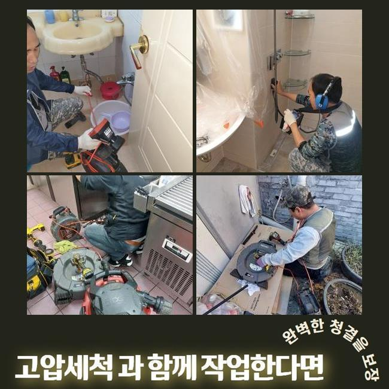
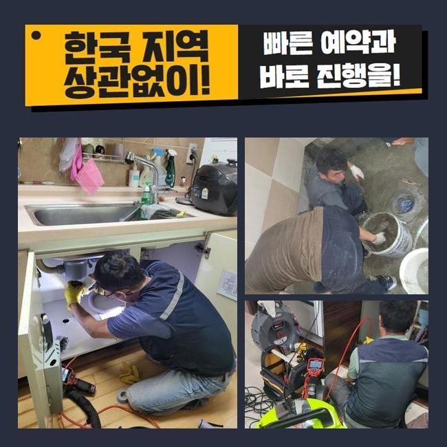
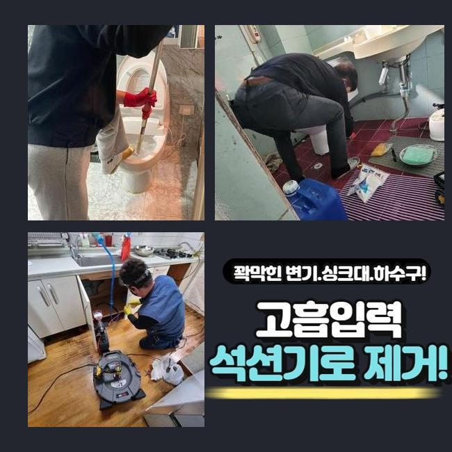
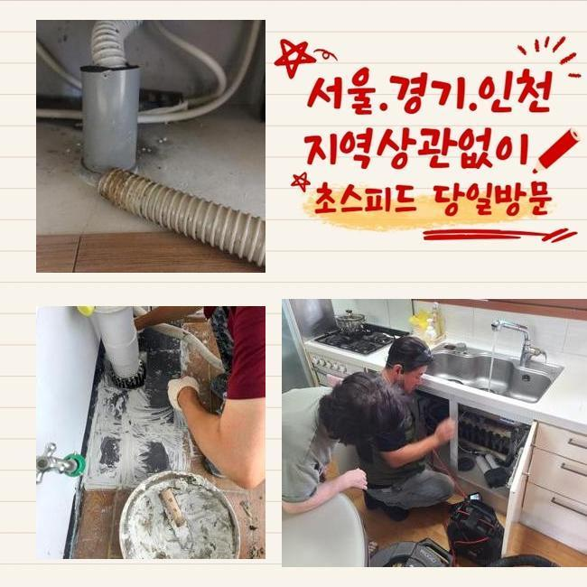
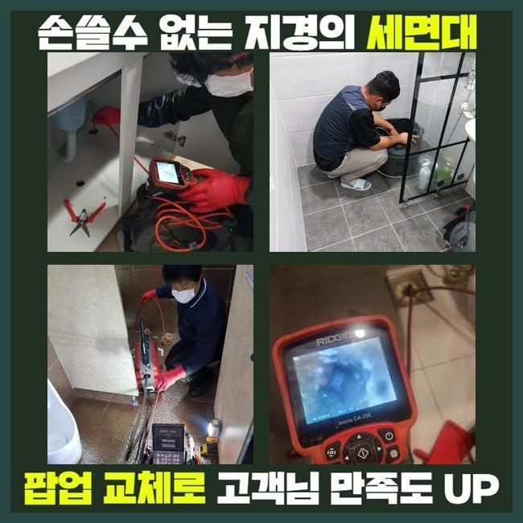

🏠 강동구 길동싱크대뚫음 천호동 맨홀막힘 배관뚫는업체
용인 싱크대막힘 전문 시공 후기

📋 작업 개요
- 위치: 용인
- 서비스 유형: 싱크대막힘, 하수구막힘, 배관막힘, 맨홀막힘, 뚫는업체, 배관청소, 고압세척
- 작업 일시: 2025. 3. 13. 17:59
- 업체명: 하수구수사대 (010-5615-2118)
🔍 문제 상황
강동구 길동싱크대뚫음 천호동 맨홀막힘 배관뚫는업체
여러 활동으로 물을 활용하면 알지 못하는 사이에 하수구에 불순한 물질들이 쌓여나갈 수 있습니다
노폐물이 점점 양을 불리면 강력한 돌덩어리처럼 밀착이 되다보니 쉽게 제거되기 어려워요
한 몸처럼 결합되어진 이물질을 강제로 떼려고 힘 줘서 대응하다가는 배수로 어딘가에 구멍이 나는 전례없는 일도 생깁니다
무엇이 잘못됐는지 식별되는 상태라고 하더라도 검증된 도구와 약품을 접목해서 작업을 해야만 결함없이 말끔하게 배수구를 회복시킬 수 있습니다
고객님 선에서 처리를 한다면 전체적인 문제를 모조리 잡아내기 힘들고 이렇다할 변화가 없을 수 있어요
오늘 소개할 현장은 실거주자가 계셨었고 오염된 물이 밀려와서 습하고 냄새까지 유발되어 다급하게 고쳐달라고 접수를 해주셨습니다
신속히 서둘러서 필요한 장치들을 갖추고 댁의 문을 두드렸습니다
걸음을 재촉해서 현상을 둘러보았더니 바닥부의 하수구 속에서 혼탁한 물이 퐁퐁 솟아나고 있었습니다
저희를 찾기 전에 셀프 클리너를 부어서 관통해보려 하셨지만 극명하게 좋아지지는 않고 변화가 없었다고 합니다

🔎 원인 분석
💡 전문가 진단: 정밀 진단 장비를 사용하여 슬러지의 고착 여부를 판명하고 타격/세척 작업을 실시했습니다.
속의 하수도 치고올라오니 냄새분자까지 확산되어 벽지와 가구에 냄새가 베이는 등 시간을 보내고 계셨다고 합니다
하수구의 이슈를 철저하게 없애서 재발이 없게끔 하려면 내부에 자리한 어떤 문제로 이러한 막힘 증세가 형성된 것인지 확실하게 디테일을 파악해야 합니다
정확도를 높이고자 빠지지 않고 가져온 카메라 장치를 써서 보이지않는 속사정을 확인했어요
내시경의 기능을 통하여 무슨 문제인지 판별해 보았더니 일부의 배관 구간에서 유분이 꽉 차게 모인 것이 문제의 근원이라고 입증할 수 있었어요
돌덩이처럼 응축된 유분 덩어리를 물리력으로 떨어뜨리려고 한다면 배관 표면에 마모가 나타날 지도 모릅니다
이물질 특성에 따라 제거해주는 기구를 동원하는 것이 안정성이 더 높은 솔루션입니다
이렇게 내부 탐방을 통해서 파악한 세부 사항을 고객님께 소상히 전달드리고 청소에 최적화된 장비를 별도로 작동해 주었습니다
고압수를 통한 하수구 정화가 투입됐는데 중간 정도 정돈이 완수되고서 한번 배관 카메라의 도움으로 원만히 처리됐는지 봐줬습니다
꿈쩍 않던 하수가 움직이는 것을 발견했지만 여전히 청소가 더 들어가야 했으므로 계속해서 진행하는 중이던 고압세척 작업에 돌입했어요
통수를 가로막던 유지방이 풀리고 통로가 확보됐음을 여러차례 검증하고 나서 작업을 마무리 짓게 되었습니다

🔧 작업 과정
최후로 내시경을 넣어서 현황을 둘러봤더니 기름지던 물질들이 싹 모조리 삭제되어서 배관이 흠 없이 투명해진 결과물을 받아보게 됐습니다
파이프라인의 사이에서 단단하게 말라 붙어있던 기름 덩어리들이 인상적일 정도였지만 기타 세척 장치들을 다시 세팅하지 않아도 해결책이 마련됐기에 시간을 아낄 수 있었어요
부드러운 기름이 아니고 석회 물질 때문에 막힘이 빚어진 장소였으면 단순한 시공만으로는 끝내기 힘들어요
커다란 석회 침전물이 떡하니 차지하고 있었다면 장비를 마구 돌려서는 안 되고 물성이 충분히 연화되도록 용해제로 전처리를 합니다
부드럽게 녹이는 약제를 주입한 뒤에 시간을 두면 거품이 한껏 부푸는데 물을 조금씩 내려보내며 헹궈내 준다면 상호작용이 일어나면서 성질이 연하게 변합니다
이와 같은 석회 용액은 비전문가의 입장에서는 구하기가 어려우니 석회가 자리한다는 사실을 감을 잡으셨다면 믿을 수 있는 전문적인 조치를 받아야 만족을 얻을 수 있을 겁니다
간단해 보이는 클리너만으로 셀프로 처리하려 시도하는 포부를 가지시기도 하지만 석회로 생기는 사태에는 클리너 기능으로는 미처 해결하지 못해요
하수관의 불통이 빚어지는 사유는 복합적인 이유가 있으니 뚫는 작업으로 건너뛰지 말고 먼저 내시경 기기를 동원해서 가로막힌 쪽들이 어딘지 판단해야 명확하게 배관을 되돌릴 수 있어요
도구 없이 봐서는 칙칙하고 매우 깊은 배수로의 수로 환경을 분명하게 판별하기는 어려움이 있어요
그러므로 내시경을 통해서 상태를 점검하는 것이 더욱 중요한 것입니다
하수가 느릿하게 내려가는 건 불현듯 나타나는 증세가 아니며 설비가 설치된 오랜 기간 동안 이물질과 더러운 노폐물이 지속적으로 모여서 결국 견고한 덩어리로 굳어져 버립니다
하수가 고일 때에 앞서서 철저하게 살피며 쓰는 것이 가장 좋은데 대표적으로 정례적으로 온수를 배수구 안에 내려보내서 안에 고인 오물들이 아래로 이동하도록 간헐적으로 희석시켜주세요
사실 초반부터 찌꺼기가 깊숙이 자리하지 않도록 배수구 필터 등을 구멍에 장착하는 것이 바람직한 예방책 중 하나입니다!
흔한 주거지를 포함하여 공공 건물 등 어디든 하수설비가 설치된 곳이라면 이와 유사한 통수 사안과 마주할 수 있어요
폐수과정이 더뎌졌다는 사실을 알아차리게 된 시점에는 악화되기 이전에 빠른 뚫음을 해주어야 하는데요
막힌 상황이 지속된다면 하수가 울컥 쏟아져 나오며 하수구 악취가 진동하는 식으로 어려움이 가중되기 때문입니다


✅ 작업 완료
역행이 한번 생겨버리면 인접한 아래층까지 피해가 빚어질 수 있으며 이걸 수습하기 위한 금액도 윗 집에서 부담해야 할 수 있거든요
막히는 일이 나타나지 않게 세심하게 설비를 관리 해야 비용절약이 됩니다
평상시에 신경써서 관리 절차를 지켜도 시간이 오래 된다면 막힘 사태가 도래할 수 있습니다!
무리하게 배관을 다루지 마시고 저희에게 하수구 보완을 맡겨주세요


⚠️ 주방 싱크대 배관 막힘 예방 수칙
- ✅ 기름기가 묻은 식기나 프라이팬은 설거지 전 키친타올로 반드시 기름때를 닦아내세요.
- ✅ 주기적으로 싱크대 개수대에 뜨거운 물을 가득 받아 한 번에 내려 배관 내부 기름을 씻어내세요.
- ✅ 배수구 거름망을 미세한 필터로 사용하시고 음식물 찌꺼기가 틈으로 새어 들지 않게 관리하세요.
- ✅ 베이킹소다와 식초를 뜨거운 물과 함께 일주일에 한 번씩 부어주면 배관 살균과 막힘 예방에 좋습니다.
💡 핵심 정리
- 확실한 장비 작업(내시경 점검 및 샤프트 스케일링)으로 원인을 뿌리 뽑습니다.
- 작업 후 1년 이내에 동일한 부위 재발 시 100% 무상 A/S 서비스를 보장합니다.
- 서울 · 경기 · 인천 전 지역에 24시간 언제든 긴급 출동할 수 있도록 항시 대기 중입니다.
❓ 자주 묻는 질문 (FAQ)
🚨 용인 싱크대막힘 문제로 고민이신가요?
정확한 원인 진단과 확실한 시공으로 재발 없는 해결을 약속드립니다.
24시간 긴급 출동 | 서울 · 경기 · 인천 전지역 | 1년 내 재발 시 무상 A/S